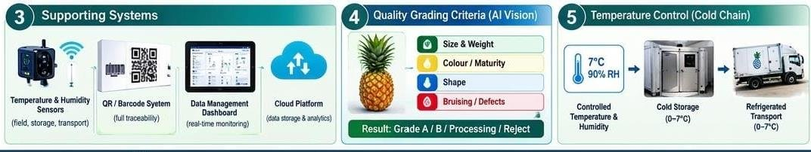

Sorting & grading lines
Post-harvest fruit and vegetable sorting by size, weight, colour and defects.
Logsco AgriTech Solutions distributes field, post-harvest and processing machinery under exclusive Malaysian rights, and supports every machine locally for life.

To be ASEAN’s most trusted gateway for smart agricultural machinery, technology and IoT, bringing world-class brands to every farm and processing centre.
To secure sole distributorships of proven international brands, support them locally for life, and digitise farms through connected IoT: first in Malaysia, then across ASEAN.
Partnering with international manufacturers to bring proven equipment to local industry players.
Post-harvest fruit and vegetable sorting by size, weight, colour and defects.
Wet-section cleaning, multi-layer waxing and air-drying systems.
Defect, weight and internal-quality inspection, including water core and translucency.
Field and production machinery for estates and growers.
Field, post-harvest and processing machinery under exclusive Malaysian distribution rights.
Automated grading lines, AI-vision quality inspection and precision-farming tools.
Soil and climate sensors, drones and remote dashboards for data-driven estates.


Export-grade grading, waxing and packing.
Machinery for estate operations.
Collection, process and packing centre set-up.
Solutions for modern food systems.
Machinery selection, plus CPPC set-up and optimisation.
Maintenance, repairs and reliable spare parts.
Machine operation and maintenance training for your team.
Assess needs, select the right machinery and plan CPPC layouts.
Machine design and features tailored to your operation.
On-site installation by local technicians in your area.
Two months of commissioning with training at your facility.
24/7 technical support and 3–5 day spare parts.

Post-harvest fruit and vegetable sorting equipment, with 21 years of R&D partnership with the Chinese Academy of Sciences and Huazhong Agricultural University.

A leading Chinese agricultural machinery manufacturer and production service provider, aiming to be a one-stop centre.
Share your crop, volumes and site. A specialist will come back to you, usually within two working days.